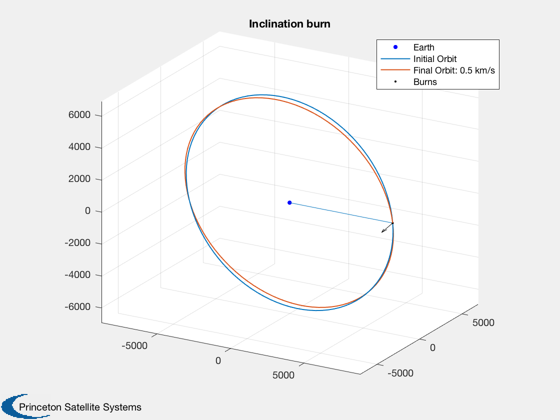
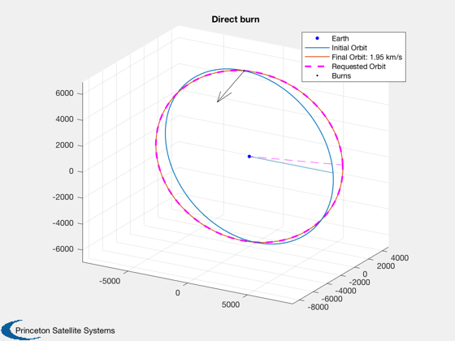

Contents
A Sun-Synchronous orbit plane change using impulsive burns.
Allow J2 to precess your orbit.
See also: TargetElementsImpulsiveAnalytic, OptimizeElementsImpulsiveSearch, DemoGradualPlaneChange
%-------------------------------------------------------------------------- % Copyright (c) 2018 Princeton Satellite Systems, Inc. % All rights reserved. %-------------------------------------------------------------------------- % Since 2018.1 %-------------------------------------------------------------------------- % You start in a circular, sun-synchronous orbit at this radius: rInitial = 7000; % km % You have this much delta-V to expend on plane change: dVTot = 1; % km/s % You desire to advance your longitude of ascending node by this amount: change = 15*pi/180; % radians fprintf('rInitial = %.3g km \n',rInitial); fprintf('delta-V budget is %.3g km/s \n',dVTot); fprintf('You desire to advance your nodes by %.3g deg. \n',change*180/pi);
rInitial = 7e+03 km delta-V budget is 1 km/s You desire to advance your nodes by 15 deg.
Create a sun-synchronous orbit. WDot should be (2*pi/365.2421897)/86400
[iSync, WDotInc] = SunSyncInclination(rInitial); el0 = [rInitial iSync 0 0 0 0]; [wDotInc, WDotInc, thDotInc] = J2OrbitEffects( el0(1), el0(5), el0(2));
Evaluate the case of a plane change by altitude change
burnRaise = [dVTot/2 -pi/2 iSync-pi/2 0]; [~,~,el1R] = BurnTimesImpulsive(el0,burnRaise); PlotImpulsiveTrajectory(el0,burnRaise); title('Raising burn') [wDotR, WDotR, thDotR] = J2OrbitEffects( el1R(1), el1R(5), el1R(2)); dWDotR = WDotR - (2*pi/365.2421897)/86400; fprintf('If you raise your orbit to achieve the desired effect, \n'); fprintf('You raise it to %.3g km. \n',el1R(1)*(1+el1R(5))); fprintf('WDot is %.3g rad/s, relative drift of %.3g rad/s. \n',WDotR,dWDotR); fprintf('wDot (periapsis) is %.3g rad/s. \n',wDotR); durationR = change/dWDotR; [tNumR,~,tUnitR] = TimeLabl(abs(durationR)); tNumR = tNumR * sign(durationR); fprintf('You must stay in the raised orbit for %.3g %ss. \n',tNumR,tUnitR); dwRaise = wDotR*durationR; elAfterJ2Raise = el1R + [0 0 change dwRaise 0 0];
If you raise your orbit to achieve the desired effect, You raise it to 9.22e+03 km. WDot is 1.24e-07 rad/s, relative drift of -7.56e-08 rad/s. wDot (periapsis) is -4.08e-07 rad/s. You must stay in the raised orbit for -40.1 days.

Evaluate the case of a plane change by inclination change
burnInc = [dVTot/2 -pi/2 iSync 0]; [~,~,el1I] = BurnTimesImpulsive(el0,burnInc); PlotImpulsiveTrajectory(el0,burnInc); title('Inclination burn') [wDotInc, WDotInc, thDotInc] = J2OrbitEffects( el1I(1), el1I(5), el1I(2)); dWDotInc = WDotInc - (2*pi/365.2421897)/86400; fprintf('If you incline your orbit to achieve the desired effect, \n'); fprintf('You increase it to %.4g degrees. \n',el1I(2)*180/pi); fprintf('WDot is %.3g rad/s, relative drift of %.3g rad/s. \n',WDotInc,dWDotInc); fprintf('wDot (periapsis) is %.3g rad/s. \n',wDotInc); durationInc = change/dWDotInc; [tNumI,~,tUnitI] = TimeLabl(durationInc); fprintf('You must stay in the inclined orbit for %.3g %ss. \n',tNumI,tUnitI); dwInc = wDotInc*durationInc; elAfterJ2Inc = el1I + [0 0 change dwInc 0 0];
If you incline your orbit to achieve the desired effect, You increase it to 101.7 degrees. WDot is 2.89e-07 rad/s, relative drift of 9.02e-08 rad/s. wDot (periapsis) is -5.69e-07 rad/s. You must stay in the inclined orbit for 33.6 days.
Evaluate the case of a plane change by direct burn
elFinal = el0+[0 0 change 0 0 0]; burnDirect = TargetElementsImpulsiveAnalytic(el0,el0+[0 0 change 0 0 0]); burnDirect = RemoveTrivialBurnsImpulsive(burnDirect); PlotImpulsiveTrajectory(el0,burnDirect,elFinal); title('Direct burn') fprintf('If you perform a direct burn to achieve the desired effect, \n'); fprintf('It takes no time, but %.3g km/s. \n',sum(abs(burnDirect(:,1)))); %--------------------------------------
If you perform a direct burn to achieve the desired effect, It takes no time, but 1.95 km/s.